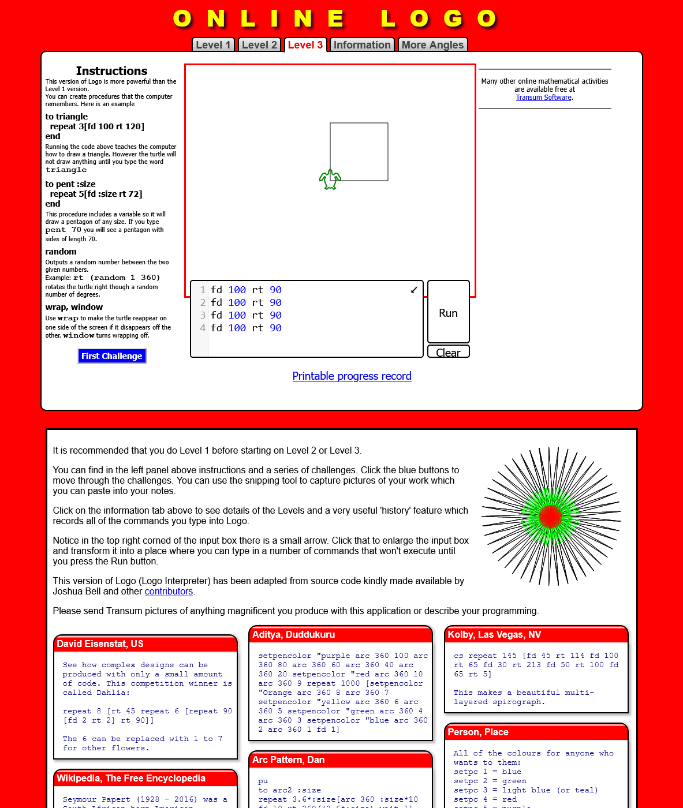
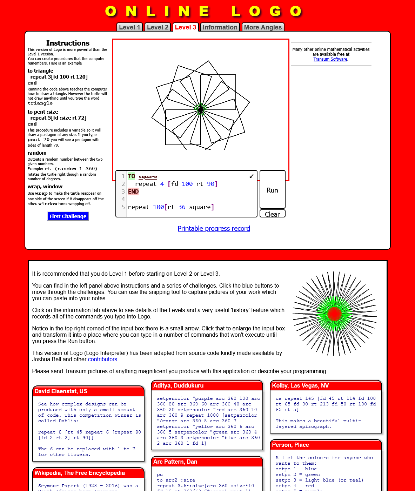
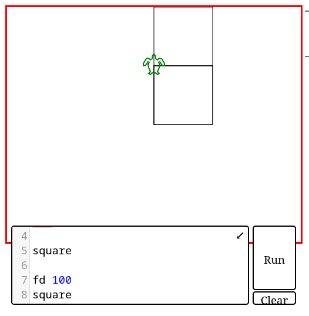
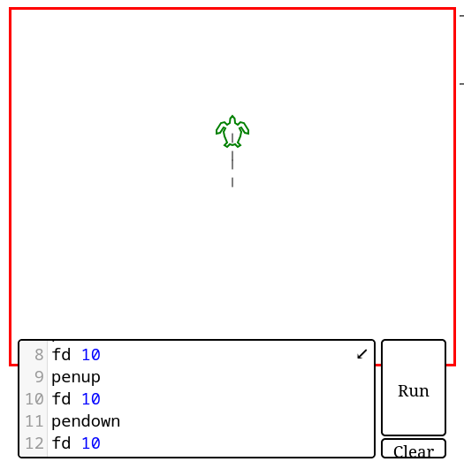
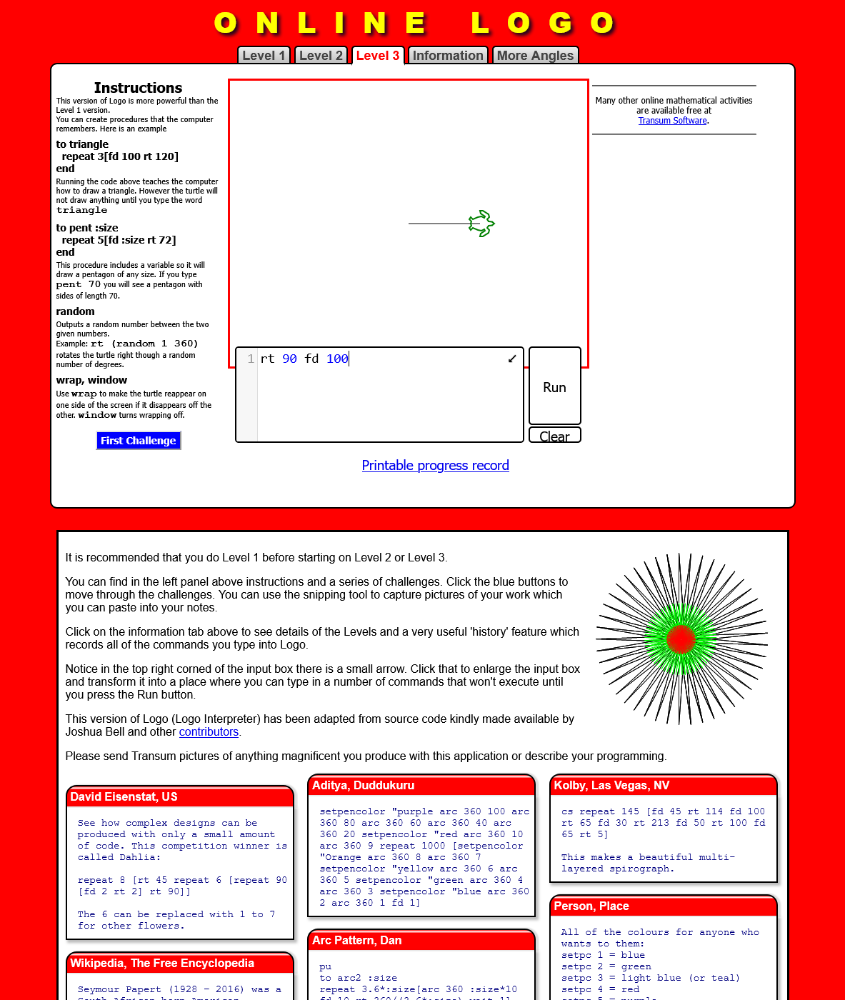
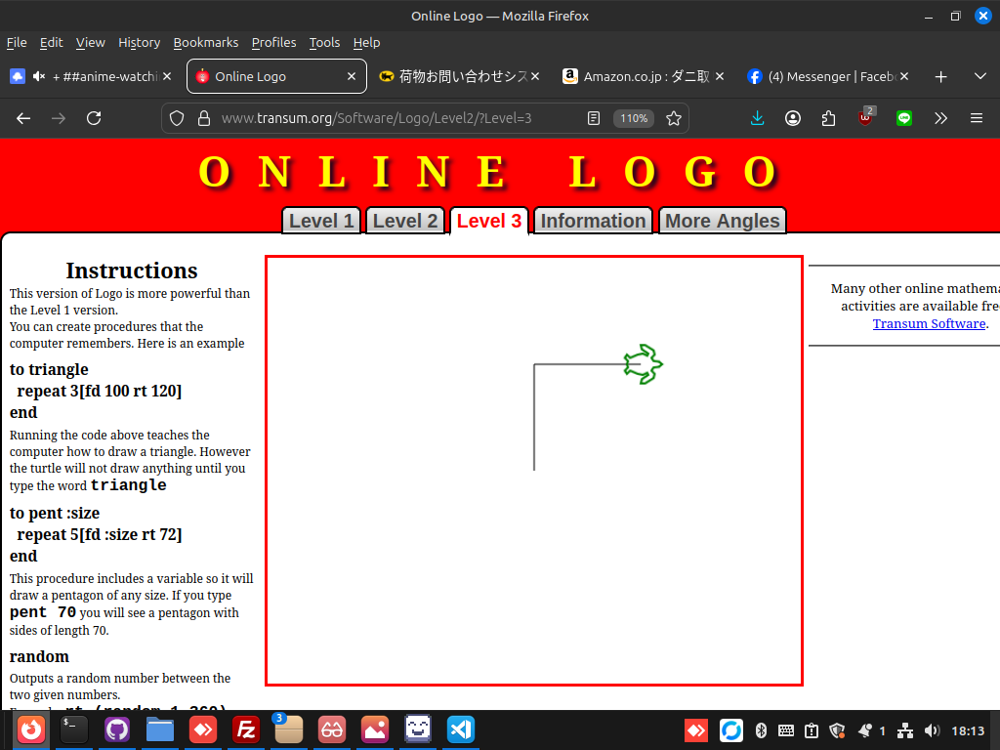

jedesa: ¡sí! jedesa: jeje, amigojapan-sensei amgigojapan: jedesa: Hola, primero te dejaré un enlace a un lenguaje de programación LOGO en línea, ¿de acuerdo? Lenguaje de programación LOGO en línea jedesa: ok jedesa: yooshi, estoy muy entusiasmada amgigojapan: Hola Haniibooru y Jedesa amgigojapan: estamos empezando en el nivel 3 jedesa: Genial jedesa: estoy dentro amgigojapan: ok, ¿todos ahí? amgigojapan: ¿Estás ahí Haniibooru? hanibooru: ¿Eh? hanibooru: ¿Voy a clase ahora? amgigojapan: sí Haniibooru hanibororu: buenas noches sensei amigojapan amgigojapan: Buenas noches estudiantes, tomen sus asientos, hagan una reverencia y digan rei a la clase :) amgigojapan: ¿Sabes qué es rei? jedesa: ... jedesa: :D amgigojapan: hacer rei, es hacer una reverencia y decir "yoroshiku onegai shimasu" a toda la clase :) amgigojapan: ok ¿estamos listos para comenzar? jedesa: estoy lista para ir amgigojapan: Haniibooru: ¿te uniste a la página web? hanibooru: ¡Sí, estoy aquí! ¡Veo una tortuga! hanibooru: ¡¡¡Kame!!! amgigojapan: ok, Lección 1, hacer que la tortuga se mueva amgigojapan: prueba fd 100 y luego haz clic en ejecutar jedesa: ¿adelante? amgigojapan: Sí, "adelante" es fd en el logo. jedesa: la tortuga se ha movido amgigojapan: 100 significa 100 píxeles hanibooru: La tortuga se ha movido hacia el norte aproximadamente la longitud de un nudillo. amgigojapan: Buen trabajo Haniibooru, eso es lo que quería. amgigojapan: ¿estás con nosotros jedesa? jedesa: Sí amgigojapan: ok, lección 2, girando la tortuga amgigojapan: hay dos comandos para girar la tortuga amgigojapan: rt que es giro a la derecha y lt que es giro a la izquierda amgigojapan: luego indicas cuantos grados quieres que gire, en esta lección solo usaremos 90 grados amgigojapan: así que prueba rt 90 antes de fd 100 amgigojapan: una alineación hanibooru: Ayuda, escribí rt 360 y no pasó nada hanibooru: Jaja, lo siento. Dejaré de hacer tonterías. amgigojapan: tu pantalla debería verse así: jedesa: ya veo hanibooru: La tortuga ahora ha girado 90 grados hacia la derecha y se ha movido hacia la derecha la misma distancia que había subido. jedesa: He hecho que la tortuga se mueva y gire. amgigojapan: ¡Buen trabajo, estudiantes! hanibooru: :D amgigojapan: ejercicio 1, haz un cuadrado, en la página web presiona ctrl+r para actualizar la pantalla y luego haz un cuadrado amgigojapan: envía una captura de pantalla cuando termines hanibooru: ¡Señor, sí señor! amgigojapan: :) jedesa: ¿para qué sirve la captura de pantalla? Jedesa: mmm amgigojapan: jedesa: Creo que la tecla Imprimir pantalla debería funcionar para tomar una captura de pantalla y luego subirla usando el sitio llamado x0.at jedesa: Nombre: jedesa https://x0.at/dWV2.png
jedesa: :D amgigojapan: déjame ver amgigojapan: ver hanibororu: https://x0.at/Ljmp.png (nota: imagen similar a la anterior) amgigojapan: muy bien jedesa amgigojapan: déjame ver a Haniibooru amgigojapan: muy bien Haniibooru, aunque jedesa hizo un programa, diste comandos repl hanibooru: Oh ya veo amgigojapan: Haniibooru: puedes crear un programa presionando shift+enter en lugar de solo enter amgigojapan: próxima lección, bucles amgigojapan: el bucle más simple en LOGO se llama "repetir" amgigojapan: "repetir" amgigojapan: jedesa: Haniibooru, primero actualice el navegador con Ctrl+R, luego escriba lo siguiente en el cuadro de programa, repita 4 [fd 100 rt 90] y luego presione Ejecutar. hanibooru: Ah, entonces repetir es como... ¡una función! amgigojapan: Haniibooru: , no, es un bucle hanibooru: Es un bucle amgigojapan: Haniibooru: veremos funciones a continuación jedesa: La tortuga se ha movido y dibuja un cuadrado. amgigojapan: sí jedesa, Haniibooru, repite esas instrucciones dentro de [] 4 veces, formando un cuadrado hanibooru: Ya veo, obtuve el mismo resultado. amgigojapan: ¿Todos conmigo ahora? jedesa: Sí hanibooru: Sí amgigojapan: ok, siguiente lección amgigojapan: funciones de la lección 4 amgigojapan: actualice el navegador y ejecute el siguiente programa to square repeat 4 [fd 100 rt 90] end square hanibooru: ¿Usaste la tabulación para sangrar la línea 2? amgigojapan: sí Haniibooru hanibooru: ¿La sintaxis es por cuestiones de claridad o es absolutamente necesaria? amgigojapan: por el bien de la pulcritud hanibooru: ya veo :) hanibooru: Gracias amgigojapan: en LOGO, en Python es absolutamente necesario amgigojapan: no hay problema amgigojapan: avísame cuando hayas terminado hanibooru: La función funciona como se esperaba, se formó otro cuadrado al llamar a la función (cuadrado) amgigojapan: sí, exactamente Haniibooru amgigojapan: ahora déjame explicarte qué significa cada palabra jedesa: ¡wow! ¡Las tortugas han creado una especie de flor! to nombre_de_función cuerpo_de_función end llamada_de_función jedesa: mediante la adición de otra repetición y giros amgigojapan: jedesa: sí, pero espera, llegaremos allí, puedes enviar una captura de pantalla si quieres hanibooru: jedesa aprende rápido :) jedesa: https://x0.at/ZqPw.png
amgigojapan: ¡Sí, buen trabajo, jedesa! amgigojapan: jedesa: eso se llama "imagen fractal" amgigojapan: es bastante útil amgigojapan: ¿Vieron los nombres de cada parte de una función? jedesa: jeje gracias Haniibooru jedesa: Sí, amigojapan hanibooru: Sí, claro. Entiendo la sintaxis. functioN_name es el nombre de la función, function_body es lo que hace la función y function_call es la llamada a la función para lo que especificamos :) amgigojapan: una función es realmente algo que usamos para no tener que repetir el código una y otra vez, podemos tener muchas llamadas de función y solo una definición de función, lo que reduce la cantidad de código que necesitamos escribir para hacer lo mismo. amgigojapan: :) exactamente Haniibooru hanibooru: Oooh, entendiendo esto, logré hacer dos cuadrados, uno encima del otro. hanibororu: https://x0.at/Is5Z.png
amgigojapan: ahora, intentemos usar varias llamadas de función, quiero la misma definición de función, pero esta vez, algo como: to square repeat 4[fd 100 rt 90] end square fd 100 square hanibooru: Oh, jaja, hice exactamente eso ahora mismo, jeje. jedesa: genial amgigojapan: Haniibooru: fantástico, predijiste la siguiente lección :) amgigojapan: jedesa: ¿estás con nosotros hasta ahora? Hanibooru: Mmm, ¿ya se supone que existe la función cuadrado? Me di cuenta de que simplemente escribo cuadrado y se crea uno. amgigojapan: Haniibooru: Creo que probablemente esté justo encima del código. Déjame intentarlo. jedesa: Sí jedesa: umm yo normalmente tampoco digo mucho cuando hay clase .-. amgigojapan: ah Haniibooru, godo discovery, parece que ya está implementado, no lo sabía hanibooru: dentro de la primera línea puedo escribir cuadrado después de una actualización, y de todos modos se creará un cuadrado, incluso si la función no está ya especificada amgigojapan: sí Haniibooru, parece que está predefinido — amigojapan no lo sabía hanibooru: Ah, ya lo he descubierto. amgigojapan: Ok, próxima lección, lección 5, parámetros jedesa: esta bien hanibooru: Si creas una función, puedes volver a llamarla incluso si se borra. Creé una función(línea) con solo [fd 100] e incluso después de actualizar, al llamarla se crea una. Llamar a una función(línea) antes de especificarla no crea una :P amgigojapan: interesante Haniibooru, no lo sabía, pero no cuente con la función preexistente hanibooru: lo entiendo. :) amgigojapan: ok, ahora prueba el siguiente programa: to square :size repeat 4 [fd :size rt 90] end square 50 square 100 square 200 jedesa: Tortuga creada cuadrada en tamaño cada vez más grande hanibooru: Ahora hay tres cuadrados, y los otros son dos veces más grandes que el anterior. amgigojapan: ¿está claro por qué? amgigojapan: el tamaño es una "variable" que se envía a la función como un "parámetro" que luego ocupa el lugar de la función del número que antes era 100, ahora es 50, 100 y 200 jedesa: Porque especificamos valores diferentes para cada función :D amgigojapan: sí jedesa amgigojapan: jedesa: para cada llamada de función, sí hanibooru: ¡Ah! jedesa: ah cierto, me refiero a la llamada amgigojapan: bien bien jedesa :) amgigojapan: ahora aprendamos algunos comandos más para LOGO amgigojapan: actualiza el navegador y prueba esto: pendown fd 10 penup fd 10 pendown fd 10 pendown fd 10 penup fd 10 pendown fd 10 amgigojapan: allí amgigojapan: ¿está claro lo que está haciendo? jedesa: ¡guiones! ¿no es así? hanibooru: Déjame intentarlo ahora amgigojapan: sí jedesa, ¿alguna pregunta? jedesa: Todavía no, amigojapan-sensei hanibooru: Veo tres líneas verticales, con un espacio entre cada una hanibororu: https://x0.at/EVDV.png
amgigojapan: Sí, como puedes ver, cuando haces penup, la tortuga deja de dibujar líneas cuando se mueve, luego pendaown activa eso nuevamente. amgigojapan: déjame ver a Haniibooru amgigojapan: sí Haniibooru amgigojapan: entonces ¿está todo claro? hanibooru: Entiendo, la tortuga puede moverse sin dibujar. jedesa: Sí amgigojapan: ok ok amgigojapan: ejercicio 2 amgigojapan: dibuja este kanji 一 amgigojapan: y muéstrame una captura de pantalla jedesa: bueno aquí vamos jedesa: https://x0.at/F5Nd.png
— amigojapan hace clic amgigojapan: ¡jedesa perfecta! jedesa: gracias jedesa: esta bien amgigojapan: Haniibooru: ¿Alguna suerte? hanibooru: Mi tortuga está desapareciendo, por favor dame un momento. hanibororu: https://x0.at/Mlp3.png (similar a arriba) hanibooru: a la tortuga no le gustan mis atajos de teclado, jaja jedesa: ¿qué pasa Haniibooru? :3 hanibooru: Cuando vuelvo a Firefox, la tortuga a veces desaparece y tengo que actualizar la página y reiniciar. :P jedesa: a la tortuguita le gustaría jugar contigo amgigojapan: muy buen Haniibooru hanibooru: Podría enseñarle a la tortuga a jugar con cartas hanafuda. amgigojapan: ok, ejercicio tamaño 3, escribe este kanji 三 amgigojapan: jedesa: es el número 3 en kanji y se pronuncia "san". amgigojapan: jedesa: solo tres líneas horizontales — jedesa intentando.. amgigojapan: está bien jedesa, tómate tu tiempo amgigojapan: Haniibooru: Ah, vale, ¡puntos extra por usar funciones! amgigojapan: ah goctha hanibooru: ¡Sí! hanibooru: hacer que la función desaparezca no fue muy fácil, tuve que hacer muchas pruebas amgigojapan: Ya veo jedesa: terminado jedesa: https://x0.at/mV8P.png (misma imagen que arriba) amgigojapan: déjame ver a jedesa jedesa: yo pero no use la función hanibooru: Tal vez si hubiera una manera de indexar la función (ichi) para que siempre mire hacia el este, sería mucho más fácil. :P amgigojapan: bien jedesa, pero me gustaría que Haniibooru compartiera su código con nosotros para que puedan ver lo que hizo amgigojapan: Haniibooru: ¿puedes pegar tu código por favor? hanibororu: Claro, hanibooru: to ichi rt 90 fd 50 end to down rt 180 fd 50 lt 90 penup fd 25 rt 180 pendown end ichi down ichi down ichi amgigojapan: ¡fantástico Haniibooru! amgigojapan: jedesa: ¿entiendes su código? jedesa: yo creo uno con función también jedesa: https://x0.at/xfPj.png (imagen similar a la de arriba) amgigojapan: Haniibooru: por cierto, ¿sabías que puedes poner nuevas líneas dentro de los cuerpos de las funciones? amgigojapan: déjame ver a jedesa jedesa: ¡Genial Haniibooru! hanibooru: amigojapan: ¡Ahora lo sé! :D amgigojapan: :) amgigojapan: ok jedesa Haniibooru, ¡ustedes son grandes estudiantes! hanibooru: ¡Sí! amgigojapan: ¡ok, último ejercicio del día! amgigojapan: haz esto usando las funciones: å“ aunque los kanji técnicamente no estén hechos de cuadrados, puedes usar cuadrados equiláteros amgigojapan: esto será lo último por hoy hanibooru: ¿Sólo funciones? amgigojapan: Haniibooru: Quiero decir, al menos usa las funciones de seguridad. jedesa:creamos cuadrado con nuestra funcion? amgigojapan: sí jedesa amgigojapan: por cierto, este kanji en japonés se llama shina amgigojapan: significa "bienes" — jedesa pensando.. amgigojapan: está bien jedesa, tómate tu tiempo amgigojapan: es lo último por hoy amgigojapan: jedesa: Haniibooru. Un consejo: puede que sea más fácil dibujar las líneas entre un objeto y otro, y luego agregar lápiz para que se vuelvan invisibles. amgigojapan: lo siento, olvidé decirlo antes hanibooru: hm ya veo hanibooru: Hm, voy a tener que hacer un montón de gimnasia mental aquí. amgigojapan: Veo a Haniibooru, lo siento si el último ejercicio fue demasiado difícil. — jedesa necesita refrigeración por agua amgigojapan: lo siento jedesa :( jedesa: no amigojapan jedesa: estoy trabajando en ello amgigojapan: ok ok jedesa: por favor espera un poco amgigojapan: ok amgigojapan: no hay problema hanibooru: No, no es tan difícil... creo. Solo necesito aprender a ser perezoso y hacerlo con la menor cantidad de funciones posible, jaja. amgigojapan: ok hanibooru: Lo ideal sería poder escribir repeat 3[square shina] y entonces estaría ahí. :P hanibooru: Estoy tan cerca amgigojapan: Está bien Haniibooru, tómate tu tiempo. jedesa: Podría ser mejor jedesa: https://x0.at/hYzE.png
— amigojapan hace clic amgigojapan: jedesa: está bien, no te preocupes, ahora esperemos a Haniibooru jedesa: La idea era crear un triangulo y en cada punto dibujar un cuadrado. amgigojapan: jedesa: ¿Qué opinas de LOGO? Es bueno ¿verdad? hanibooru: Jaja, hasta ahora he llegado hasta aquí. Hanibooru: https://pastebin.com/dWFYcnS3 to square repeat 4 [fd 30 rt 90] end to shina penup lt 90 fd 15 rt 180 fd 30 pendown end repeat 3[square shina] amgigojapan: veamos a Haniibooru hanibooru: Por favor pegue ese código. hanibooru: Ahora que mencionas triángulos, creo que puedo reajustar esto. jedesa: Sí, amigojapan, ahora siento que también debería repasar matemáticas de nuevo. amgigojapan: Haniibooru: un poco desfigurado amgigojapan: Haniibooru: y jedesa, ¿qué tal si lo perfeccionamos como tarea? hanibooru: amigojapan: Jaja, solo un poquito. Estoy intentando alinear el tercer cuadrado. amgigojapan: ok Haniibooru jedesa: No me importa... Me vendría bien algo de ejercicio. amgigojapan: ok jedesa hanibooru: acepto la tarea amgigojapan: ok, la clase terminó :) ¡de pie! ¡di rei! — jedesa se levanta y hace una reverencia :) amgigojapan: Haniibooru: jedesa, ¿puedo usar sus nombres en un documento que quiero hacer sobre la enseñanza de la programación en LOGO? hanibooru: Puedes amgigojapan: Simplemente copiaré y pegaré todo esto en un documento. jedesa: jedesa estaría feliz amgigojapan: ¡gracias Haniibooru! amgigojapan: ¡gracias jedesa! —Haniibooru hace una reverencia hanibooru: yoroshiku onegai shimasu - ¡amigojapan hace una reverencia a yoroshiku onegai shimasu! hanibooru: Jaja, yo también haría esto para cada comienzo de práctica de Aikido. Más tarde ese mismo día me dieron su tarea: ;programa shina de jedesa ã€€å“ a la Sra. pluma arriba fd 25 Set 270 fd 25 Set 0 pendown repetir 4[rt 90 fd 80] pluma arriba ruta 90 fd 25 ruta 90 fd 25 Set 0 fin penup setpos[0 50] ms penup setpos[-50 -50] ms penup setpos[50 -50] ms ;La versión de Haniibooru de shinaã€€å“ al centro de la plaza pluma arriba parte 135 fd 21 ruta 135 pendown repetir 4[ fd 30 rt 90 ] pluma arriba ruta 45 fd 21 lt 45 fin Centersquare lt 154 fd 34 rt 154 Centersquare RT 90 fd 31 lt 90 plaza central ;la versión de amigojapan de shinaã€€å“ Inicio; envía la tortuga al centro de la pantalla. cs;borrar pantalla para cuadrar :s repetir 4[fd :s rt 90] fin pu setx -35;establece la coordenada x en 35 pd 30 metros cuadrados pu establecer 0 pd 30 metros cuadrados abrir fd 35 conjunto -17 pd; bolígrafo abajo 30 metros cuadrados ht; tortuga escondida